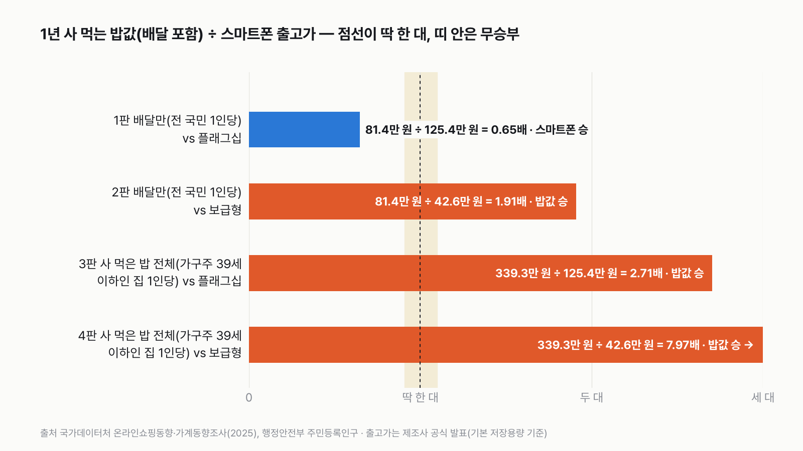
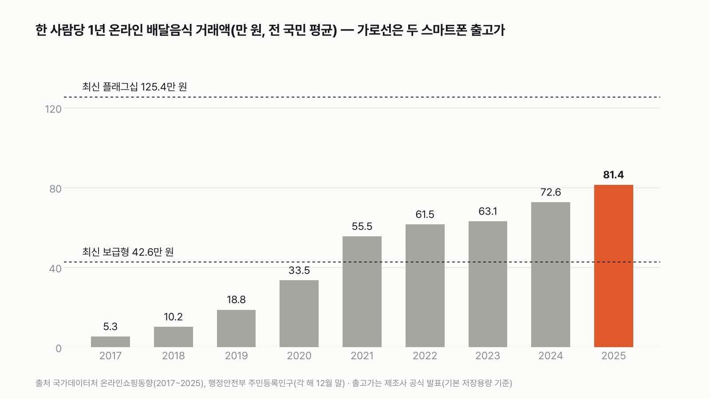
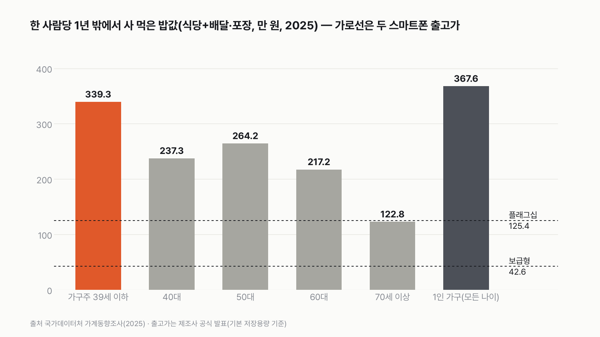

실험맨이 1년 동안 사 먹는 밥값(배달 포함)으로 최신 스마트폰을 살 수 있을까
배달 한 번, 식당 한 끼는 몇만 원이지만, 1년을 모으면 어디까지 갈까요? 내 배달·외식 내역을 떠올리며 국가 통계로 재 봐요.

독자 투표
이 대결의 규칙 자세히 (자료·판정 기준)
3줄 요약
- 평균 한국인 실험맨이 1년 동안 사 먹는 밥값(배달 포함)과 최신 스마트폰 한 대 값을 견줘요.
- 밥값 쪽은 '배달만 센 값'과 '밖에서 사 먹은 밥 전체(가구주가 39세 이하인 집의 1인당 값)'로, 스마트폰 쪽은 '최신 플래그십'과 '최신 보급형' 출고가로 나눠 네 판을 겨뤄요.
- 1년 돈이 출고가의 1.1배 이상이면 '산다', 약 91% 이하면 '못 산다', 그 사이는 비김이에요.
조건과 규칙
- 실험맨은 평균 한국인 대역이에요. 숫자는 전 국민 평균(배달만)과 가구주가 39세 이하인 집의 1인당 값(밖에서 사 먹은 밥 전체)으로 쟀어요.
- 배달만 센 값은 국가데이터처 온라인쇼핑동향의 '음식서비스' 거래액(2025년 1~12월 합)을 2025년 12월 말 주민등록인구로 나눈 값이에요. 배달앱처럼 온라인으로 주문한 음식이에요. 아기부터 어르신까지 모두 넣은 1인당 평균이에요.
- 밖에서 사 먹은 밥 전체는 가계동향조사의 '식사비'예요. 가계동향에는 '배달음식' 항목이 따로 없고, 식당에서 먹은 밥과 배달·포장이 '식사비' 하나로 묶여 있어요. 가구주가 39세 이하인 가구의 한 달 식사비 × 12를 평균 가구원수로 나눠 한 사람당 값으로 바꿨어요.
- 스마트폰은 국내 제조사가 공식 발표한 국내 출고가(기본 저장용량)만 썼어요. 통신사 지원금, 할인, 중고 가격은 넣지 않았어요. 제품 이름 대신 '최신 플래그십', '최신 보급형'으로 써요.
- 1년 돈 ÷ 출고가가 1.1 이상이면 '산다(밥값 승)', 1 ÷ 1.1(0.909) 이하면 '못 산다(스마트폰 승)', 그 사이는 비김이에요.
- 네 판 가운데 더 많이 이긴 쪽이 최종 승자예요. 승수가 같으면 비김이에요.
결과 요약
밥값 3승, 스마트폰 1승 → 최종 '산다'(밥값 승)
- 배달만 세면 1년 81.4만 원이에요. 최신 플래그십 출고가 125.4만 원의 0.65배라 못 사요. 스마트폰 승이에요.
- 같은 81.4만 원으로 최신 보급형(42.6만 원)은 1.91배라 사고도 남아요. 밥값 승이에요.
- 밖에서 사 먹은 밥 전체(가구주 39세 이하 가구)는 한 사람당 1년 339.3만 원이에요. 플래그십의 2.71배라 밥값 승이에요.
- 같은 339.3만 원은 보급형의 7.97배예요. 밥값 승이에요.
그래서? 배달만 세면 플래그십 한 대에 18개월 반이 걸려요. 식당에서 먹은 밥까지 더하면 4개월 남짓이면 플래그십 값이 모여요.
계산 전 어림으로도 '배달만'은 플래그십에 모자라고 '밥 전체'는 넘을 거라고 봤어요. 승부를 가른 건 배달만 센 값과 보급형의 판이었어요.
독자 예상 vs 데이터 결과
실험맨이 1년 동안 사 먹는 밥값(배달 포함)으로 최신 스마트폰을 살 수 있을까?
데이터로 보면 산다. 배달만 센 1년 81.4만 원은 플래그십(125.4만 원)의 0.65배라 못 사지만, 보급형(42.6만 원)은 1.91배라 사요. 밖에서 사 먹은 밥 전체(39세 이하 가구 1인당 339.3만 원)는 플래그십의 2.71배, 보급형의 7.97배예요. 3승 1패로 '산다'예요.
3줄 요약
- 평균 한국인 실험맨이 1년 동안 사 먹는 밥값(배달 포함)과 최신 스마트폰 한 대 값을 견줘요.
- 밥값 쪽은 '배달만 센 값'과 '밖에서 사 먹은 밥 전체(가구주가 39세 이하인 집의 1인당 값)'로, 스마트폰 쪽은 '최신 플래그십'과 '최신 보급형' 출고가로 나눠 네 판을 겨뤄요.
- 1년 돈이 출고가의 1.1배 이상이면 '산다', 약 91% 이하면 '못 산다', 그 사이는 비김이에요.


1판 배달만(전 국민 1인당) vs 플래그십: 스마트폰 승(0.65배)
2025년 온라인으로 주문한 음식은 모두 41조 5,889억 원어치예요. 2025년 12월 말 인구 5,111만 7,378명으로 나누면 한 사람당 1년 81만 3,596원, 한 달 6만 7,800원이에요. 최신 플래그십 기본형 출고가 125만 4,000원의 65%예요. 이 속도로 모으면 플래그십 한 대 값이 차는 데 18.5개월이 걸려요.
2판 배달만(전 국민 1인당) vs 보급형: 밥값 승(1.91배)
가장 최근에 나온 보급형은 출고가 42만 5,700원이에요. 81만 3,596원이면 두 대 가까이 사요. 6.3개월이면 한 대 값이 모여요. 배달만 보면 플래그십에는 지고, 보급형이면 이겨요. 같은 배달 돈이 어떤 스마트폰과 겨루느냐에 따라 승자가 바뀌어요.
3판 밖에서 사 먹은 밥 전체(가구주가 39세 이하인 집의 1인당 값) vs 플래그십: 밥값 승(2.71배)
가계동향조사에서 가구주가 39세 이하인 가구는 한 달 식사비로 51만 5,118원을 써요. 이 가구의 평균 가구원은 1.822명이라, 한 사람당 한 달 28만 2,700원, 1년 339만 2,654원이에요. 플래그십 두 대를 사고도 88만 원이 남아요. 4.4개월이면 한 대 값이 모여요. 39세 이하 가구는 나이대 가운데 한 사람당 식사비가 가장 커요. 전체 가구 평균(한 사람당 1년 244.5만 원)으로 재도 플래그십의 1.95배예요.
4판 밖에서 사 먹은 밥 전체(가구주가 39세 이하인 집의 1인당 값) vs 보급형: 밥값 승(7.97배)
같은 339만 원이면 보급형 일곱 대를 사고 한 대 값 가까이 남아요. 한 달 반(1.5개월)이면 보급형 한 대 값이 모여요. 네 판 가운데 차이가 가장 커요.
8년 만에 15배가 됐어요
이 표가 시작하는 2017년, 한 사람당 1년 배달 주문은 5만 2,774원이었어요. 2019년 18.8만 원, 2020년 33.5만 원, 2021년 55.5만 원으로 해마다 크게 뛰었어요. 2025년 81.4만 원은 2017년의 15.4배예요. 그사이 인구는 5,178만 명에서 5,112만 명으로 줄었어요.


보급형은 2021년에 처음 넘었어요
지금 출고가로 견주면, 한 사람당 배달 돈이 보급형 42.6만 원을 처음 넘은 해는 2021년(1.30배)이에요. 2020년(33.5만 원)은 0.79배라 못 샀어요. 플래그십 125.4만 원은 아직 한 번도 넘지 못했어요. 비기려면 한 사람당 1년 114만 원이 넘어야 하는데, 2025년 값보다 40% 더 많아야 해요.
나이대별로 보면 39세 이하가 가장 많이 써요
가계동향의 가구주 연령대별로 한 사람당 1년 식사비를 견주면 39세 이하 339.3만 원, 50대 264.2만 원, 40대 237.3만 원, 60대 217.2만 원, 70세 이상 122.8만 원이에요. 70세 이상만 플래그십 출고가와 0.98배로 비김 구간 안에 들어요. 나머지는 모두 플래그십을 넘어요.


혼자 사는 집은 한 사람당 더 많아요
가구원수별로 나누면 1인 가구의 1년 식사비는 367.6만 원이에요. 2인 가구 한 사람당 238.1만 원, 4인 가구 한 사람당 211.6만 원보다 많아요. 1인 가구에는 모든 나이가 섞여 있어서, 30대 1인 가구만의 값은 이 표로 알 수 없어요.
6년 사이 61% 늘었어요
가구주 39세 이하 가구의 한 사람당 1년 식사비는 2019년 211.1만 원에서 2025년 339.3만 원이 됐어요. 61% 늘었어요. 같은 기간 가구원수는 2.224명에서 1.822명으로 줄었어요. 한 사람당으로 나누는 수가 작아진 것도 함께 담긴 숫자예요.
출고가를 바꿔 봐도 결과는 같아요
플래그십은 2026년 10월 1일부터 출고가가 14만 9,600원 올라 140만 3,600원이 됐다는 보도가 있어요. 제조사 공식 보도자료는 찾지 못해서 판정에는 출시 때 공식 발표가를 썼어요. 보도된 값으로 바꾸면 1판은 0.58배로 차이가 더 벌어지고, 3판은 2.42배로 여전히 밥값 승이에요. 보급형을 올해 앞서 나온 5G 보급형 모델(59만 8,400원)로 바꿔도 2판은 1.36배라 밥값 승이에요. 어느 쪽으로 바꿔도 3승 1패는 그대로예요.
배달 한 번은 몇만 원이지만, 1년을 모으면 스마트폰 한 대가 보여요. 배달만 셌을 때 실험맨은 보급형은 사고 플래그십은 못 사요. 식당에서 먹은 밥까지 더하면, 가구주 39세 이하 집 기준으로 플래그십도 넉넉히 사요. 이번 달 배달앱 주문 내역을 열어 합계를 12로 곱해 보면, 내 1년 배달 돈이 어느 스마트폰 앞에 서 있는지 보여요.
이 숫자는 어디서 왔나요
출처
기준일 배달과 식사비는 2025년 값이에요. KOSIS 값은 2026년 11월 10일에 받았어요. 출고가는 2026년 11월 10일까지 나온 제조사 발표 기준이에요. 조건은 2026년 11월 10일, 값을 받기 전에 정했어요.
국가데이터처온라인쇼핑동향조사
- 온라인쇼핑몰 운영형태별/상품군별 거래액KOSIS DT_1KE10051원본 보기
음식서비스 거래액, 2017~2025 월
행정안전부주민등록인구현황
- 행정구역(시군구)별, 성별 인구수KOSIS DT_1B040A3원본 보기
전국 총인구, 각 해 12월 말
국가데이터처가계동향조사
삼성전자 국내 뉴스룸
- 최신 플래그십 사전 판매 보도자료(2026-02-26)원본 보기
플래그십 기본형 출고가(기본 저장용량 256GB 기준)
삼성전자 보도자료(뉴스와이어 배포)
- 최신 보급형 국내 출시 보도자료(2026-10-30)원본 보기
보급형 출고가(기본 저장용량 기준)
삼성전자 국내 뉴스룸
- 앞서 나온 5G 보급형 국내 출시 보도자료원본 보기
점수 밖: 앞서 나온 5G 보급형 출고가(기본 저장용량 기준)
아이뉴스24
- 플래그십 출고가 인상 보도(2026-10-01)원본 보기
점수 밖: 인상 보도가(제조사 공식 자료 못 찾음)
어떻게 셌나요
- 배달만 센 값: 온라인쇼핑동향 '온라인쇼핑몰 운영형태별/상품군별 거래액'(월)에서 상품군 '음식서비스', 운영형태 '계'를 2025년 1~12월 더했어요(41조 5,889억 원). 이를 주민등록인구 2025년 12월 말 전국 총인구(5,111만 7,378명)로 나눴어요.
- 밖에서 사 먹은 밥 전체: 가계동향조사 '가구주 연령별 가구당 월평균 가계수지'(전국, 1인 이상, 전체가구) 2025년 '39세이하 가구'의 '식사비'(51만 5,118원) × 12 ÷ 가구원수(1.822명)예요.
- 스마트폰: 최신 플래그십은 국내 제조사의 가장 최근 플래그십(바 형태 주력 시리즈) 기본형, 256GB예요. 2026년 2월 사전 판매 때 제조사가 발표한 국내 출고가예요. 최신 보급형은 같은 제조사가 2026년 10월 30일 국내에 낸 보급형 모델 출고가예요.
- 판정: 1년 돈 ÷ 출고가가 1.1 이상이면 밥값 승, 0.909 이하면 스마트폰 승, 그 사이는 비김이에요.
| 항목 | 값 | 잰 것 / 가정 |
|---|---|---|
| 온라인 음식서비스 거래액(2025, 12개월 합) | 41조 5,889억 원 | 잰 것 |
| 주민등록인구(2025년 12월 말) | 5,111만 7,378명 | 잰 것 |
| 가구주 39세 이하 가구 월 식사비(2025) | 51만 5,118원 | 잰 것(가계동향 표본조사) |
| 같은 가구 평균 가구원수(2025) | 1.822명 | 잰 것 |
| 최신 플래그십 출고가(기본 저장용량 기준) | 125만 4,000원 | 제조사 공식 발표 |
| 최신 보급형 출고가(기본 저장용량 기준) | 42만 5,700원 | 제조사 공식 발표 |
| 실험맨 = 전 국민 평균(배달만)·가구주 39세 이하 가구 1인당(밥 전체) | — | 가정 |
| 아이도 한 사람으로 나눔 | 가구원수 그대로 | 가정 |
한계 7가지
이 데이터로 말할 수 없는 것
- 성별·나이(예: 30대 남성)만 따로 본 배달·식사비는 이 표들로 알 수 없어요. 배달만 센 값은 아기부터 어르신까지 모두 넣은 평균이고, 식사비는 가구주 나이로 나눈 가구의 1인당 값이에요.
- 온라인 음식서비스 거래액에는 전화로 주문하거나 가게에서 포장해 간 음식은 빠져 있어요. 거래액에 배달비가 어디까지 들어 있는지는 표에 적혀 있지 않아요.
- 온라인 음식서비스 거래액에는 앱으로 주문하고 직접 찾아간 포장도 들어 있을 수 있고, 가계 소비만의 값도 아니에요.
- 가계동향의 식사비에는 식당에서 먹은 밥, 배달, 포장이 함께 들어 있어요. 배달만 따로 떼어 볼 수 없어요.
- 가구원수로 나눌 때 아이도 어른과 똑같이 한 사람으로 셌어요.
- 출고가는 기본 저장용량 값이에요. 실제로 내는 돈은 통신사 지원금, 할인, 저장용량에 따라 달라요.
- 플래그십 출고가 인상은 언론 보도로만 확인했어요. 판정에는 출시 때 공식 발표가를 썼어요.
다음 대결
대결 다 보기사 온 커피값, 밥값의 5% 넘을까
실험맨, 사 온 커피값이 밖에서 먹는 밥값의 5%를 넘을까?
A넘는다vsB못 넘는다
투표하러 가기

판다 vs 실험맨
판다 vs 실험맨, 다섯 판 승부로 하루에 '더 많이 먹는' 쪽은?
A판다vsB실험맨
투표하러 가기

20대 vs 우리 할아버지
20대 여성 실험맨 vs 65세 이상 남성 실험맨, 네 판 승부로 하루 운동을 더 많이 하는 쪽은?
A20대 여성vsB65세 이상 남성
투표하러 가기

출퇴근 vs 연차
실험맨이 1년 동안 출퇴근에 쓰는 시간과 연차 휴가로 쉬는 시간, 세 판 승부로 더 긴 쪽은?
A출퇴근vsB연차 휴가
투표하러 가기

1년 쓰는 물 vs 레인 한 줄
실험맨 혼자 1년 쓴 수돗물로 25m 수영장 레인 한 줄을 채울 수 있을까?
A채운다vsB못 채운다
투표하러 가기

실험맨 vs 고양이 그루밍
실험맨 vs 고양이, 세 판 승부로 하루 씻고 꾸미는 시간이 더 긴 쪽은 누굴까?
A실험맨vsB고양이
투표하러 가기

고3 vs 기린
고3 실험맨과 기린, 하루에 누가 더 적게 잘까?
A고3vsB기린
투표하러 가기

60세 이상 vs 20대
60세 이상 여성 실험맨과 20대 여성 실험맨, 하루 사람을 만나 어울리는 시간은 누가 더 길까?
A60세 이상 여성vsB20대 여성
투표하러 가기
새 글 나오면 받아 보기
피드 리더 앱에 이 사이트 주소를 한 번 넣어 두면, 새 글이 올라올 때 앱에 떠요. 가입이나 메일 주소는 필요 없어요.
받는 법 보기
- 피드 리더 앱을 하나 골라요. 새 글을 모아 보여 주는 앱이에요. 예를 들면 Feedly나 Inoreader가 있어요. 둘 다 무료고 웹·휴대폰에서 써요.
- 앱에서 '구독 추가'(+)를 누르고 아래 주소를 붙여 넣어요.
- 끝이에요. 새 글이 올라오면 앱 목록에 떠요.
https://protofu.github.io/opendata-insight/feed.xmlFeedly를 쓴다면 여기를 눌러 바로 추가할 수도 있어요.